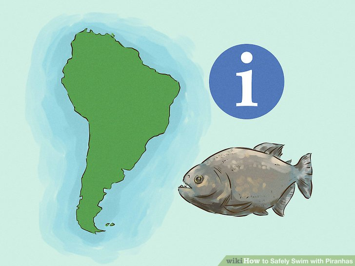
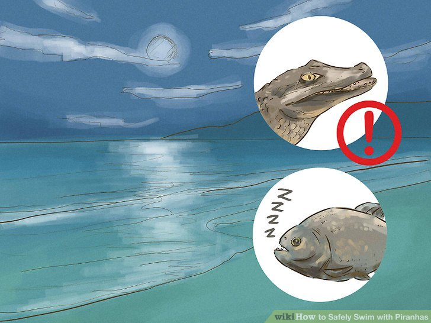
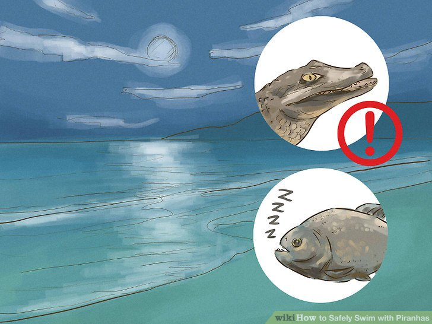
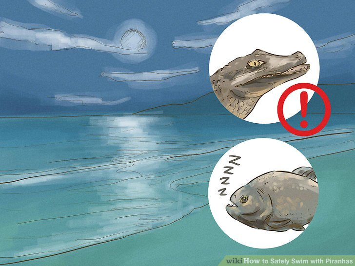

How to
Safely Swim with Piranhas.
Piranhas are freshwater fish and live only in South America (although occasionally a stray pet piranha turns up in a river elsewhere). Residing almost exclusively in still or slow-moving streams or lakes,they usually die in cold water.">
![Avoid swimming with piranhas in the dry season.<br/>Piranhas are usually mild-mannered and skittish. They rarely, if ever, attack a much larger animal unless they are starving. Food supplies are at their lowest during the dry season (which lasts from around April to September) when water levels fall dramatically and food is less plentiful, so avoid entering piranha-infested waters during these times. If you're in doubt about whether the dry season is still underway, ask local residents if it's safe to swim. Be wary of ponds that seem to be a product of the movements of a river. Rivers slowly move back and forth and often shrink and grow with the rain, leaving temporary ponds behind. Fish in these waters are isolated from other water sources and are essentially condemned to death; they could jump and attack you out of sheer desperation if you stand close enough.](images/image_2.jpeg) If, during the dry season, you must venture into water inhabited by piranhas, wait until darkness before attempting to traverse without a boat. Piranhas hunt in the day and sleep at night. If awakened from their slumber while it's dark, piranhas will generally flee, but it's safest not to disturb them.
Remember that other predators, such as caimans, are more active at night. If attempting to cross a waterway with a diversity of organisms, the dangers of traveling at night may far outweigh the benefits.">
If, during the dry season, you must venture into water inhabited by piranhas, wait until darkness before attempting to traverse without a boat. Piranhas hunt in the day and sleep at night. If awakened from their slumber while it's dark, piranhas will generally flee, but it's safest not to disturb them.
Remember that other predators, such as caimans, are more active at night. If attempting to cross a waterway with a diversity of organisms, the dangers of traveling at night may far outweigh the benefits.">
If, during the dry season, you must venture into water inhabited by piranhas, wait until darkness before attempting to traverse without a boat. Piranhas hunt in the day and sleep at night. If awakened from their slumber while it's dark, piranhas will generally flee, but it's safest not to disturb them.
Remember that other predators, such as caimans, are more active at night. If attempting to cross a waterway with a diversity of organisms, the dangers of traveling at night may far outweigh the benefits.">
![Stay out of the water if you have an open, bleeding cut. Piranhas sense blood in the water and are more likely to attack a larger animal if they think it's wounded.
You should also avoid carrying raw meat into the water, and wash your hands before entering if you have recently handled raw meat. (Don't wash where piranhas reside).
Steer clear of waters below bird nesting areas, docks where fish are gutted, and garbage dumps; you don't want the piranhas to associate you with the blood that could come from these sources.](images/image_4.jpeg)
 As a last-ditch effort, try to create a diversion by releasing an animal carcass or a substantial quantity of raw meat downstream from your desired crossing point. Should such action become necessary, keep in mind that piranhas can strip animals to the bone in a matter of minutes or even seconds, so you'll want to cross very quickly before they sense you.">
As a last-ditch effort, try to create a diversion by releasing an animal carcass or a substantial quantity of raw meat downstream from your desired crossing point. Should such action become necessary, keep in mind that piranhas can strip animals to the bone in a matter of minutes or even seconds, so you'll want to cross very quickly before they sense you.">
Intro.
Piranhas, the "wolves of the water," are known for their ability to strip an animal to the bone in mere seconds.
They aren't actually as dangerous to humans as you'd think, especially if you swim with them during the wet season when they have plenty of food. Still, South American shoals of piranhas can be dangerous when food is scarce. If you're going to take a dip in the Amazon, read on to see how you can swim peacefully with piranhas.